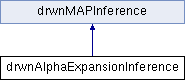

Implements alpha-expansion inference using graph-cuts (see Boykov et al, 2001). Factor graphs must be pairwise. More...
Inheritance diagram for drwnAlphaExpansionInference:

Public Member Functions | |
| drwnAlphaExpansionInference (const drwnFactorGraph &graph) | |
| std::pair< double, double > | inference (drwnFullAssignment &mapAssignment) |
Run inference (or resume for iterative algorithms). Algorithms may initialize from mapAssignment if not empty. Returns an upper and lower bound (if available) of the minimum energy. The upper bound is the same as the energy of the best solution found (i.e., same as graph.getEnergy(mapAssignment)). | |
 Public Member Functions inherited from drwnMAPInference Public Member Functions inherited from drwnMAPInference | |
| drwnMAPInference (const drwnFactorGraph &graph) | |
| drwnMAPInference (const drwnMAPInference &inf) | |
| virtual void | clear () |
| Clear internally cached data (e.g., computation graph) | |
Additional Inherited Members | |
| Protected Attributes inherited from drwnMAPInference | |
| const drwnFactorGraph & | _graph |
| reference to initial clique potentials | |
Detailed Description
Implements alpha-expansion inference using graph-cuts (see Boykov et al, 2001). Factor graphs must be pairwise.
The documentation for this class was generated from the following files:
- drwnGraphCutInference.h
- drwnGraphCutInference.cpp